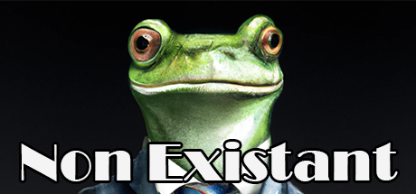

Non-Existant
Utviklet av: Sondre Grønås
In "Non-Existant", the player controls a character who wakes up in a strange world with no memory of how they got there. They soon discover that they are in a video game that doesn't seem to exist - there are no other players, no NPCs, and no way to win or lose.
Written notes to go along the description go here! (The description was generated courtesy of OpenAI's Davinci-002 Model)